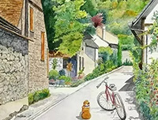

创意的火花
作者：佚名
2025.01.01
在一个平凡的小镇上，住着一个名叫小李的年轻人。他拥有一份稳定的工作，过着按部就班的生活。然而，小李的内心却充满了对创意的渴望。
有一天，小李在街头漫步时，无意间发现了一家即将倒闭的文具店。店里的商品陈旧，生意冷清。小李突然萌生了一个想法：为什么不能将这家文具店改造成一个充满创意的空间呢？
说干就干，小李辞去了稳定的工作，接手了这家文具店。他开始四处寻找创意灵感，从书籍、电影到旅行中的见闻，他都用心去感受、去记录。
经过一番精心改造，文具店焕然一新。小李在店里设置了创意工作区，供人们举办工作坊、分享会；他还引进了各种独特的文具和手工艺品，吸引了不少年轻人前来探索。
渐渐地，这家文具店成了小镇上的一个创意聚集地。人们在这里交流想法，激发灵感，共同创造出了许多有趣的作品。
小李也从一个普通的年轻人成长为了创意的引领者。他用自己的行动证明了，创意不仅能够改变自己的生活，还能为周围的人带来快乐和启发。
这个故事在小镇上流传开来，激励着更多的人去追寻自己的创意梦想。而小李的文具店，也成为了小镇上的一道独特风景线，见证着创意的火花在这里绽放。
#趣味故事集# #创意生活#